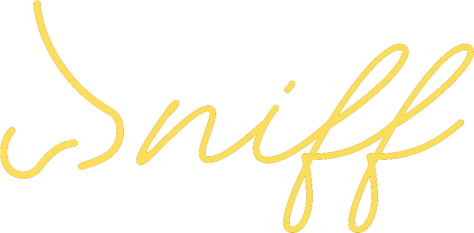
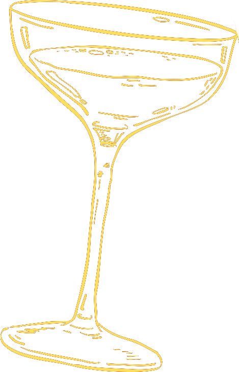
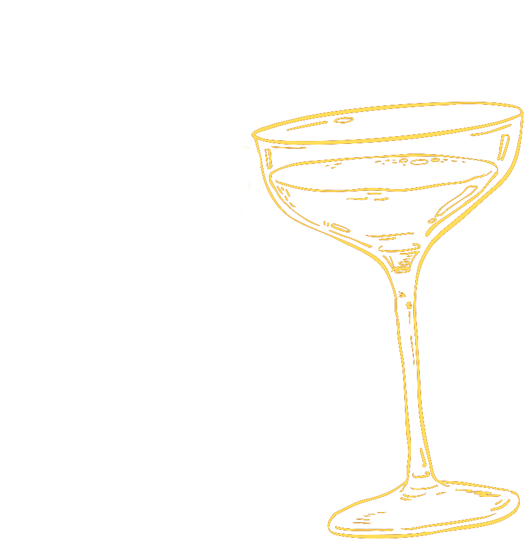
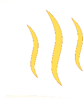

Bar ve Reçete Dili
Her kokteyl; denge, yoğunluk ve bitiş süresi gözetilerek hazırlanır. Malzeme seçimi kadar sunum ritmi de tarifin bir parçası kabul edilir.




Sniff Alsancak; samimi, sinematik ve çekici bir gece deneyimi için kuruldu. Kırmızı kadife tonlarıyla neon altın detaylar, mekana karakter kazandırır.
Amacımız yalnızca iyi içki sunmak değil; doğru tempoda akan, hafızada kalan bir gece anlatısı kurmak. Bu yüzden koku katmanından müzik seçimine, servis dilinden sunum estetiğine kadar her unsur aynı çizgide ilerler.
Modern miksoloji anlayışını, klasik speakeasy ruhuyla birleştiriyor; her sunumu mekanın estetiğiyle aynı çizgide tutuyoruz. Şık ama mesafesiz, iddialı ama dengeli bir servis dili benimsiyoruz.
Mekandaki her gece aynı kalmaz; ancak kalite standardı hep aynı kalır. Sniff deneyimi üç temel katmanda şekillenir.
Her kokteyl; denge, yoğunluk ve bitiş süresi gözetilerek hazırlanır. Malzeme seçimi kadar sunum ritmi de tarifin bir parçası kabul edilir.
Düşük ışık, sıcak tonlar ve kontrollü ses seviyesiyle geceyi yormayan ama enerjisi sürekli yükselen bir lounge akışı hedeflenir.
Alsancak 1469. Sokak'ta konumlanan Sniff, semtin canlı temposunu premium bir gece kulübü estetiğiyle buluşturur.
Sniff'te amaç “çok şey” yapmak değil, doğru şeyleri doğru ölçüde yapmaktır. Bu yaklaşım, hem bar operasyonunda hem de misafir iletişiminde sadeliği ve kaliteyi birlikte taşır.
Her masanın temposu farklıdır. Bu nedenle ekip, servis önerilerini gece akışına göre kişiselleştirir; misafiri yönlendiren ama baskılamayan bir iletişim dili kurar.
Sniff Alsancak, kısa süreli bir eğlence noktası değil; tekrar gelmek isteyeceğin bir gece ritüeli oluşturmak için tasarlandı.
Rezervasyon Oluştur